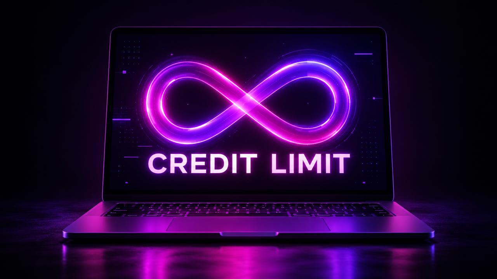
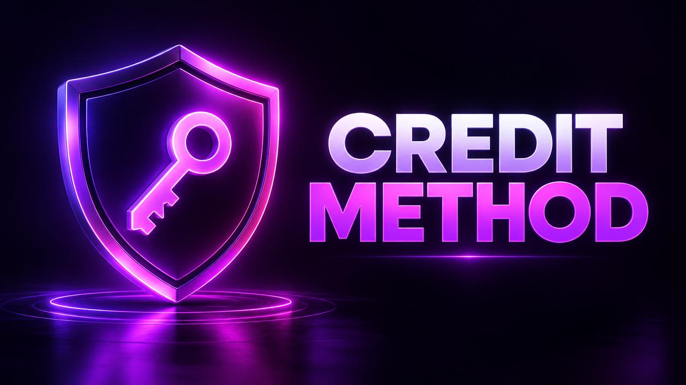

Sadia runs a small design agency and uses Lovable for three client projects at once. At the end of every month she has the same problem: she knows her credits are gone, but she has no idea which project used them. Her clients pay different amounts, so she needs to know exactly where her Lovable usage is going.
If you have ever asked "How many Lovable credits do I have left?" or "Where did my credits go?", this guide will show you, step by step, how to check your Lovable credit balance, read your Lovable credit history, and keep an accurate eye on your Lovable credits remaining.
Why Tracking Your Credits Matters
Most people only look at their balance when it is already empty. By then it is too late to change anything. Tracking your credits regularly helps you:
- Avoid running out in the middle of important work
- Understand which tasks are expensive so you can prompt better
- Charge clients fairly when you build for others
- Spot unusual activity, such as a teammate using more than expected
- Choose the right plan based on real numbers, not guesses
Think of it like checking your bank app. You do not need to look every hour, but a quick weekly check prevents most surprises.
Understanding the Three Key Numbers
Before we go step by step, it helps to understand the three numbers you will see.
1. Current Credit Balance Your Lovable credit balance is how many credits you can use right now. This is the number that matters when you are about to send a big prompt.
2. Credits Remaining Until Reset Some plans show credits remaining for the day or month. This tells you how much of your current allowance is still available before the next reset.
3. Credit History Your Lovable credit history is a list of past usage. It shows when credits were used and, depending on the view, which project or action used them.
Balance tells you where you are. History tells you how you got there.
Step-by-Step: How to Check Your Lovable Credit Balance
- Open Lovable and sign in to your account.
- Click your workspace name or profile menu.
- Open Settings.
- Go to Plans & Credits (the name can vary slightly).
- Look for your current balance and your next reset date.
Tip: Bookmark this page. Checking it takes five seconds once you know where it is.

Step-by-Step: How to Read Your Lovable Credit History
- From the same Plans & Credits area, open the usage or history view.
- Choose a time range, such as the last 7 or 30 days.
- Look for spikes: days or hours where usage jumped.
- Match spikes with your chat history in the project to see which prompts caused them.
- Note the pattern: was it a new feature, a redesign or a debugging loop?
What to Look For
| What you see | What it usually means |
|---|---|
| Many small entries close together | A "fix it" loop or many tiny edits |
| One large entry | A big feature or major redesign |
| Usage when you were offline | A teammate using the shared workspace |
| Steady small daily usage | Healthy, efficient building |
If you find surprising entries, our guide on why Lovable uses so many credits explains each cause and how to fix it.
How to Track Lovable Usage per Project
If, like Sadia, you work on several projects, you need to know which project uses what.
Method 1: Use the History View If your history view shows the project name, filter or sort by project and add up the totals.
Method 2: Keep a Simple Log If you need more detail, keep a small spreadsheet with:
- Date
- Project name
- Balance before a work session
- Balance after the session
- What you built
This takes one minute per session and gives you exact numbers for client billing.
Method 3: Separate Workspaces For agencies, keeping separate workspaces for large clients makes tracking automatic, because each workspace has its own balance.
How to Know How Many Credits You Need
After two or three weeks of tracking, you will know your average usage. Use it to plan:
- Add up your weekly usage from the history.
- Multiply by four to estimate your monthly need.
- Add a 20% buffer for unexpected bugs and client changes.
- Compare that number to your plan.
If you regularly use more than your plan gives, you either need more efficient prompts or a bigger allowance. Start with our guide on how to save Lovable credits; many people find they do not need to upgrade after all.
Setting Up a Simple Weekly Credit Routine
Here is a routine that takes under five minutes a week:
- Monday morning: Check your balance and reset date.
- Look at last week's history and find the single most expensive day.
- Ask yourself why that day was expensive.
- Write one improvement for this week, for example "describe bugs in detail".
- Plan big features for right after your reset, when your balance is full.
This small habit turns credit tracking from a worry into a simple planning tool.
What If the Numbers Do Not Add Up?
Sometimes your balance may seem lower than your history suggests. Before worrying:
- Refresh the page; numbers can take a moment to update.
- Check workspace members; shared workspaces share one balance.
- Check the reset date; you may be looking at the wrong period.
If it still looks wrong, see our detailed guide on Lovable credits missing or balance wrong.
How Sadia Solved Her Problem
Sadia started a simple log with balance before and after each session. Within two weeks she discovered that one client's project used over half of her credits, mostly because that client kept changing the design. She now includes design changes as a paid extra in her quotes and schedules that client's work right after her reset. Her credits last the full month again.
Final Thoughts
Checking your Lovable credit balance and credit history is one of the easiest ways to take control of your usage. You do not need special tools, just a regular look at the numbers and a little curiosity about the spikes. For the basics of how credits are charged, read Lovable credits explained, and if you need a larger allowance, visit our products page.
Frequently Asked Questions
Where can I see my Lovable credit balance? Open Settings → Plans & Credits in your workspace. Your current balance and reset date are shown there.
Can I see which project used my credits? In many cases yes, through the usage or history view. If not, keep a simple log of balance before and after each session for each project.
How often should I check my Lovable credit history? Once a week is enough for most people. Check more often during big launches or client deadlines.
Why is my balance lower than I expected? Common reasons are teammates in the same workspace, debugging loops and large feature requests. Your credit history will show exactly when the credits were used.
Keep reading
If this topic is useful, you may also want to read how Lovable credits work, the Lovable credit system explained, when your credits reset and what Lovable PRO includes.
- #lovable credit balance
- #lovable credit history
- #lovable credits remaining
- #lovable usage